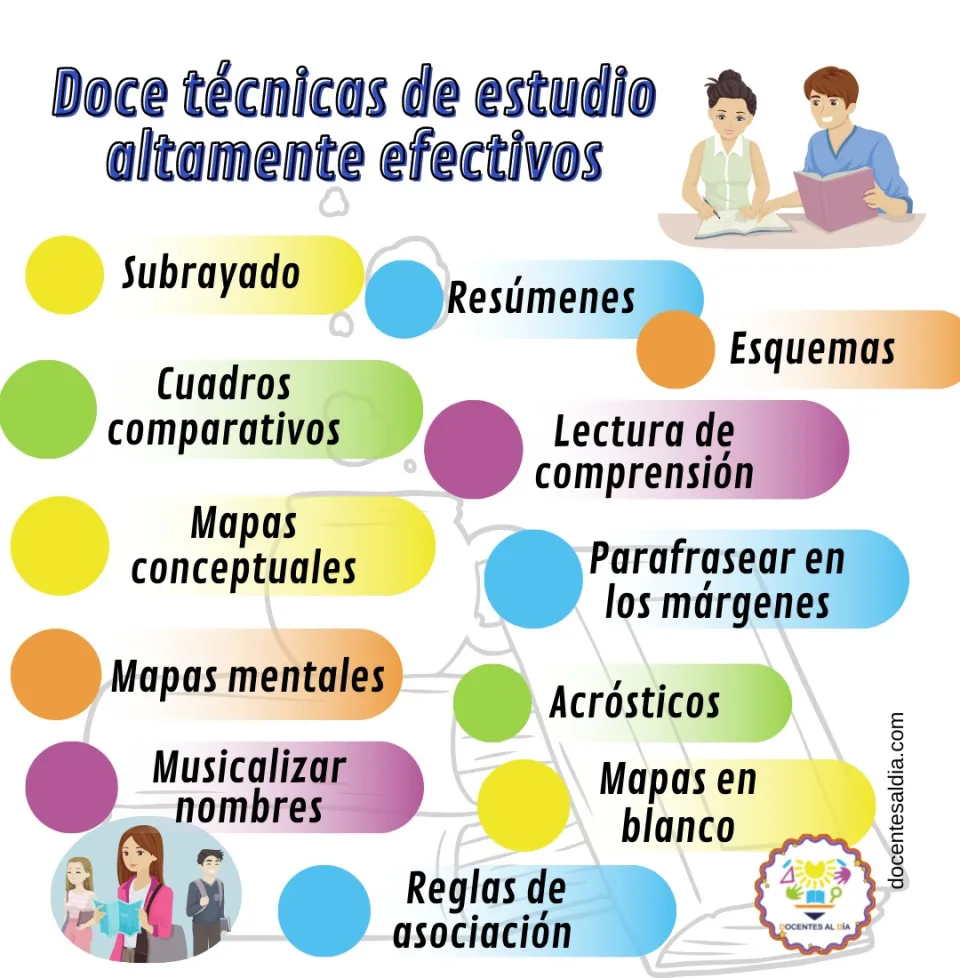

Aprender de memoria las cosas ya pasó de moda y no está demás decir, que los resultados de este tipo de estudio son, en su mayoría, fatales. Si te olvidas una palabra puede que se te olvide todo lo demás. Pero no te preocupes, existen muchas más técnicas de estudio que son dinámicas, divertidas y lo mejor es que potenciarán tu aprendizaje.
1. Subrayar lo importante:Este es uno de los métodos de estudio más conocidos. Debes destacar las partes más significativas del texto usando colores, un resaltador, plumones, etc. Antes de realizar el subrayado debes leer y comprender el texto.
2. Realiza tus propios apuntes:Esto es uno de los hábitos de estudio más conocidos. Se trata de resumir lo más importante con nuestras propias palabras para así recordarlo. Ten en cuenta que no debes dejar fuera ningún dato clave. Puedes hacerlo de manera tradicional con lápiz y papel o usar herramientas online que te permitan hacer anotaciones digitales como: Quickoffice, Penultimate, Squid, Simplenote y Moleskine Journal.
3. Mapas mentales:Esta es una técnica muy efectiva sobre como estudiar mejor que te enseñan en el colegio. Un mapa mental resume y organiza nuestras ideas. Si lo hacemos bien, puede ahorrarnos muchas horas de estudio y asegurarnos sacar una buena nota en el examen. Puedes elaborarlo tú mismo a mano o utilizar herramientas digitales como Mindmanager, XMind, Coggle, Freemind, Goconqr, entre otros.
4. Fichas de estudio:Si quieres asimilar datos concretos como fechas, números o vocabulario deberás seguir este método de aprendizaje. Es útil usarlas en materias que incluyen el uso de números o aprender otro idioma. Aquí se realiza un proceso de memorización pero divertido. Se pueden elaborar fichas de manera manual o a través de apps como Cram, Quizlet, Flashcard Machine, etc. que pueden desarrollar desde tu celular o PC.
5.Brainstorming:Hacer una reunión de grupo y realizar lluvia de ideas sobre un determinado tema es uno de los métodos de estudios más útiles al momento de realizar trabajos en grupo. Tener diferentes ideas y perspectivas ayuda a resolver dudas y llegar al fondo de la materia si es que te estas preparando para un examen. Está técnica es muy recomendable.
Las estrategias de aprendizaje se han definido como los procesos o acciones que los estudiantes realizan para mejorar su propio aprendizaje, para aprender a aprender7. Dicho de otra forma, los estudiantes seleccionan acciones, las combinan y les dan un orden para lograr una meta de aprendizaje definida.
Para que los estudiantes puedan lograr cualquier meta, no solamente académicas, deberán usar varias estrategias de aprendizaje y saber cuándo elegir una y cuándo otra. Se hace necesario que manejen una amplia variedad de estrategias y para aprender esto está la oportunidad de hacerlo dentro de los tiempos de clases ya asignados, no es necesario hacer nuevas asignaturas o talleres especiales (aunque sí podrían ser útiles para ciertos contenidos específicos).